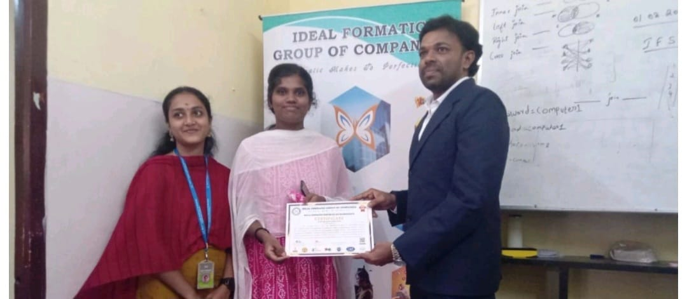
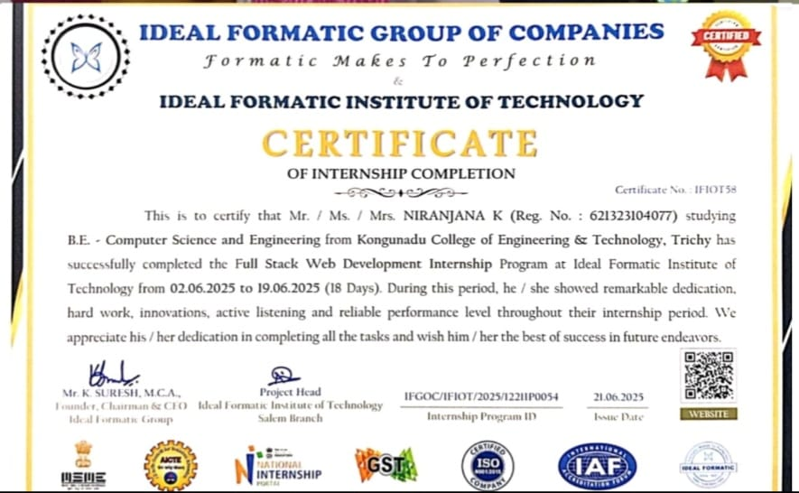

← Back to Portfolio
Full Stack Web Developer Internship
Ideal Informatics Group of Company, Salem
Duration: 15 Days
Domain: Full Stack Web Development
During this internship, I gained practical exposure to real-world web
application development and understood how front-end and back-end
technologies work together in a professional development environment.
Responsibilities
- Assisted in developing responsive web pages.
- Worked with both front-end and back-end development concepts.
- Participated in debugging and testing web applications.
- Improved user interface layout and webpage responsiveness.
- Learned professional project structure and workflow management.
Technologies Used
- HTML
- CSS
- JavaScript
- PHP
- MySQL
- XAMPP
What I Learned
- Creating responsive and user-friendly web interfaces.
- Connecting web pages with databases using PHP and MySQL.
- Understanding client-server communication.
- Testing, debugging, and improving application performance.
- Working in a professional software development environment.
Internship Certificate


Internship Outcome
This internship strengthened my understanding of full-stack web
development and improved my technical, problem-solving, and teamwork
skills. It provided valuable hands-on experience in developing practical
web applications using modern web technologies.